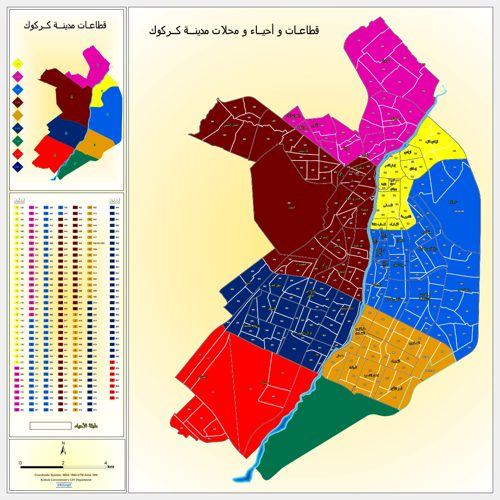
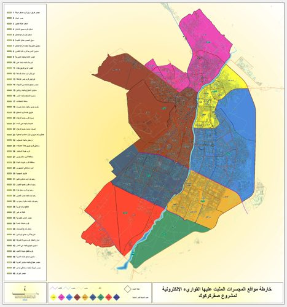
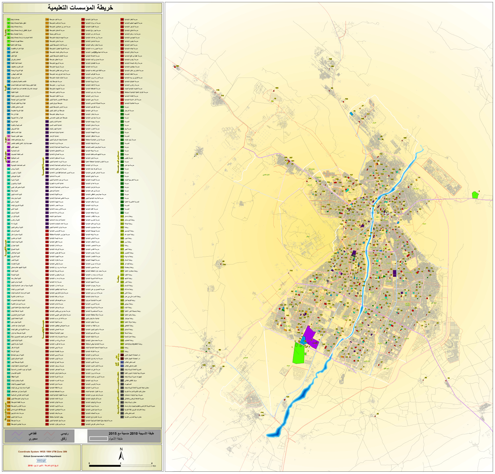
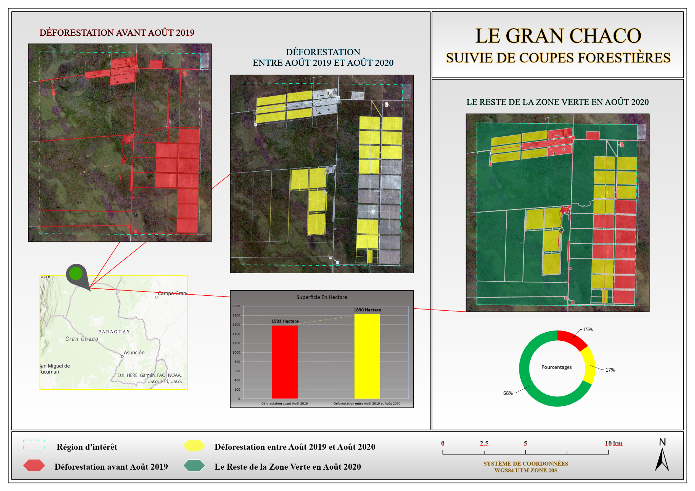
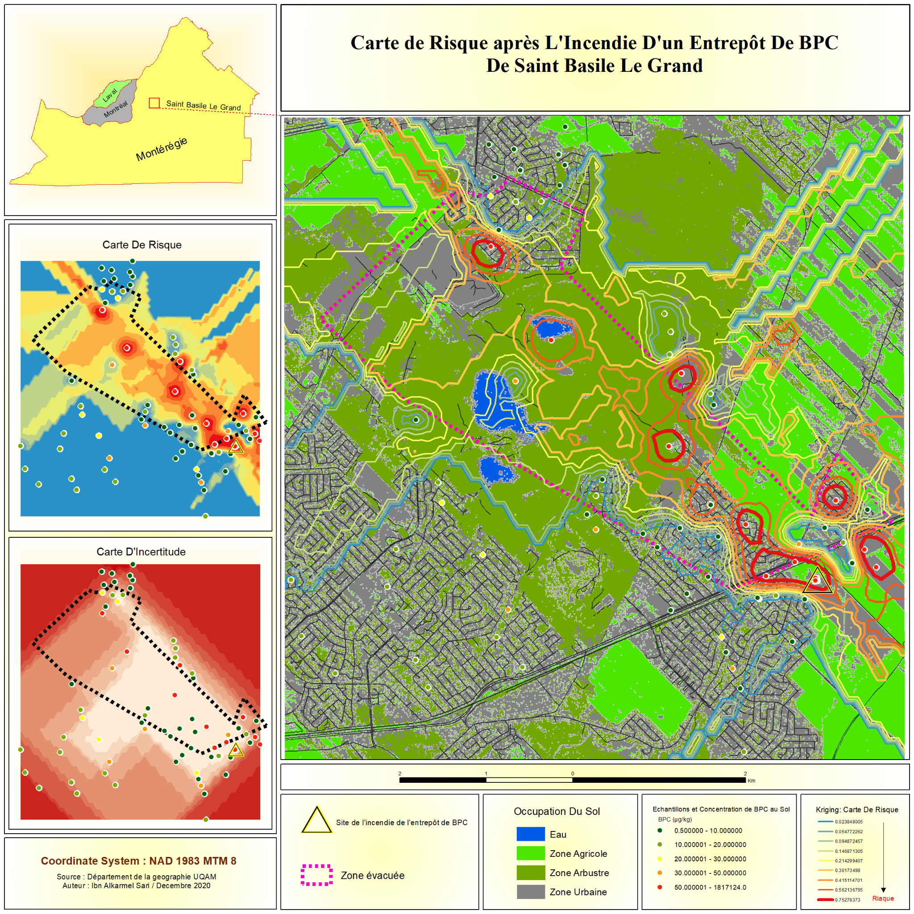
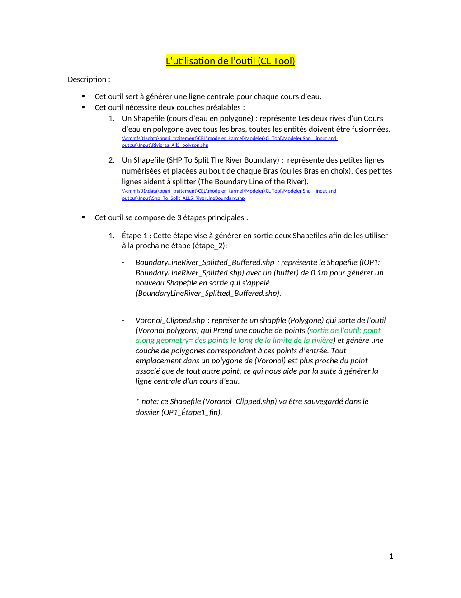
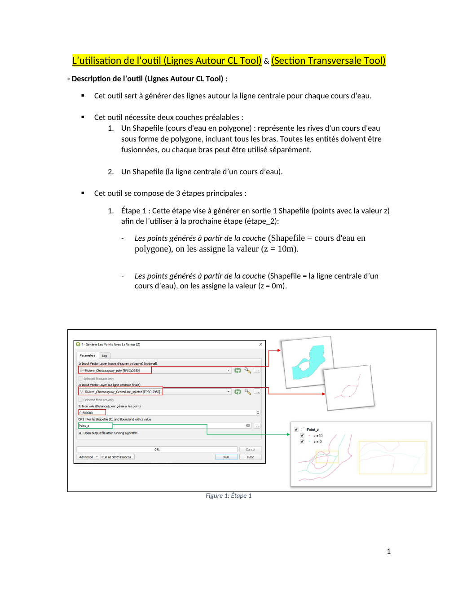
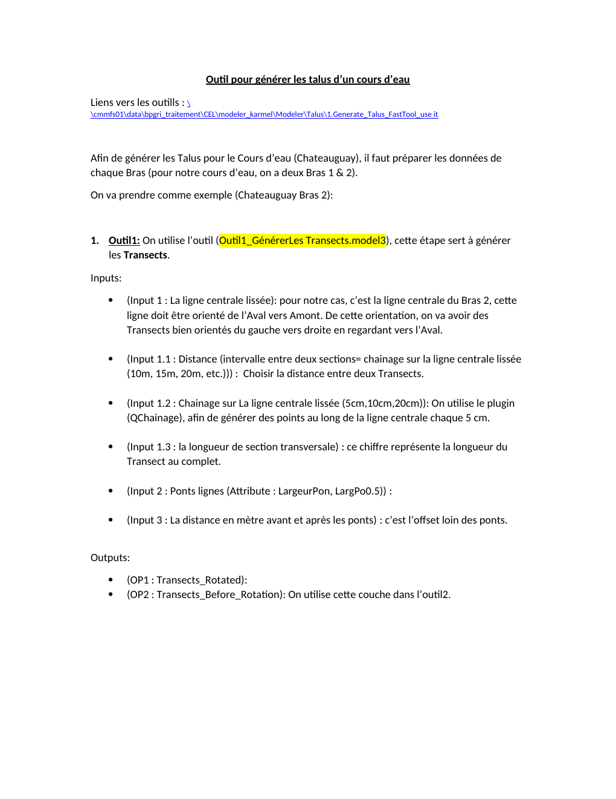
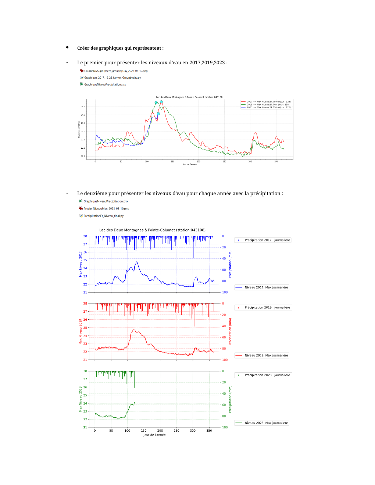

Karmel Sari
GIS Technician & Geomatics Engineer — Montreal, Quebec
(438) 226-4323 · karmelmosari@gmail.com
Several years of experience in geomatics, particularly in geospatial data management and analysis, GIS, surveying and cartography. I contribute to process automation by developing geospatial tools. Esri ArcGIS Desktop Associate 10.1 certified, I am rigorous, autonomous and comfortable working in multidisciplinary environments. I enjoy applying my technical skills to practical projects and developing effective solutions to structure, analyze, automate and enhance geospatial data.
Driver’s License · French & EnglishAugust 2024
GIS Technician
Communauté métropolitaine de Montreal (CMM)
Montreal, Canada — BPGRI Project
- Production de rapports sur les cours d'eau : cartes, graphiques longitudinaux/transversaux, figures de récurrence.
- Développement d'outils pour améliorer l'efficacité de l'équipe.
- Mise en place d'une approche de traitement des résultats de modélisation hydraulique.
- Automation (Python & QGIS Modeler) of BPGRI data production.
GIS Intern
Administration portuaire de Montreal
Montreal, Canada
- Integration, digitization and collection of geospatial data for asset management.
- Use of SQL, FME, AutoCAD Map 3D, ArcPy, ArcGIS Pro and ArcGIS Online.
August 2018
Geomatics Engineer
Infograph
Amman, Jordan
- Visualization, analysis and conversion of data for ArcGIS Desktop.
- Thematic map production; GIS training and technical support.
- Cost evaluation, project management and employee onboarding.
Geomatics Engineer
Geophysical Services Center (GSC)
Lebanon — Oil Seismic Surveying
- Suivi des opérations d'arpentage, supervision d'équipe, préparation données sismiques 2D.
Sept. 2012
Geomatics Engineer
Geophysical Services Center (GSC)
Jordan & Syria
- Field operations management, 2D & 3D seismic data and map updates.
July 2008
Geomatics Engineer
Ayman Al-Amarneh Construction
Aqaba, Jordan
- Topographic plans, construction staking and work monitoring using AutoCAD & ArcGIS.
Surveying Technician
Hasan Trawneh Contracting Est.
Aqaba, Jordan
- Surveying for the construction of the Wadi Rum tourist village walls.
GIS Software
Programming & Databases
Field Surveying Equipment
Professional Skills
DESS en systèmes d'information géographique
UQAM, Montreal
Baccalauréat — Surveying and Geomatics Engineering
Al-Balqa' Applied University, Jordan
Diplôme — Survey Science
Wadi Seer Training Center, Jordan
Educations continues
The Complete Full-Stack Web Development Bootcamp
Udemy
The Ultimate Pandas Bootcamp: Advanced Python Data Analysis
Udemy
Spatial Databases — PostGIS in PostgreSQL & QGIS
Udemy
The Complete SQL Bootcamp
Udemy
Educations ArcGIS (Introduction, Workflows, Analyse, Geodatabase, Web, Versioning…)
Infograph / ESRI — Amman, Jordan
AutoCAD 2008
Engineers Training Center, Amman
Brent Edwards
Chef d'équipe SIG & développement Web — CMM
brent.m.edwards@gmail.com
LinkedIn
514-445-9563
Sanit Sananikone
Geomatics Supervisor — City of Montreal
s_sananikone@hotmail.com
LinkedIn
514-850-9792
Mazen Jouaneh
General Manager — Infograph, Jordan
m.jouaneh@infograph.com.jo
+962 6 560 3546
+962 79 558 3492
Sélection de travaux réalisés dans le cadre de mes expériences professionnelles et de ma formation en géomatique.
Maps réalisées dans la compagnie INFOGRAPH
Selection of cartographic work completed during my professional experience at INFOGRAPH.

City sectors, neighborhoods and zones
Map of urban sectors, neighborhoods and zones produced as part of my work at Infograph.
View map →
Location map — Saqer
Example of cartographic production completed as part of my work at Infograph.
View map →
Educational facilities map
Mapping of educational institutions and facilities.
View map →
Maps réalisées dans le cadre du DESS en SIG à l’UQAM
Sélection de travaux cartographiques réalisés dans le cadre du DESS en systèmes d'information géographique à l'UQAM.

Deforestation monitoring — Gran Chaco
Forest clearing monitoring and analysis of deforestation trends.
View map →
Areas covered and not covered by police
Analysis of intervention areas based on response times.
View map →

Crime in Downtown Montreal
Analysis of the spatial distribution of crime in downtown Montreal.
View map →
Risk map — Saint-Basile-le-Grand
Risk analysis following a PCB warehouse fire.
View map →Maps, graphiques et figures réalisés à la CMM dans le cadre des rapports finaux portant sur chaque cours d’eau
Examples of maps, graphs and figures produced for final reports on watercourses.


ModelBuilder
Selection of documents and projects illustrating automation workflows and tools developed with ModelBuilder.

Gis to Cad Tool using DLS - Key
Conversion of ArcGIS data to AutoCAD DWG using the DLS_Key field.
View document →
Gis to Cad Tool using Sheet-ID
Conversion of ArcGIS data to AutoCAD DWG using the Sheet_ID field.
View document →
Curve vertices solution - CornersNumbering - ParcelsNumbering
ModelBuilder solutions for curve vertex processing and parcel workflow automation.
View document →
Corners Numbering with Coordinates for layout print - Help
ModelBuilder tool for formatting parcel corner coordinates for map layouts.
View document →
Numbering parcels (TEMP_P_ID) - Help
ModelBuilder tool for automatically numbering parcels in the TEMP_P_ID field.
View document →
Modeler & Python Scripts
Documents and projects completed with Modeler.

Land cover data processing steps
Guide to land cover data processing and associated tools.
View document →

Tool for generating a watercourse centerline and its branches
Documentation for the watercourse centerline generation tool.
View document →

Tool for generating lines around the centerline
Documentation for the tool used to generate lines around the centerline.
View document →
Tool for generating watercourse cross-sections
Documentation of the tools used to generate cross-sections.
View document →
Tool for smoothing data used in HEC-RAS
Documentation of the smoothing and simplification process for data intended for HEC-RAS.
View document →

Bank generation tools
Documentation of the tools used to generate banks and transects.
View document →
Depression identification script
Documentation of depression identification within the CMM limits.
View document →

Script for generating graphs showing water levels, precipitation and snow levels
Documentation of hydrological graph generation.
View document →
Script for generating flow, depth, surface area, and minimum and maximum velocities
Documentation of the script used to generate flow, depth, surface area and velocity figures.
View document →